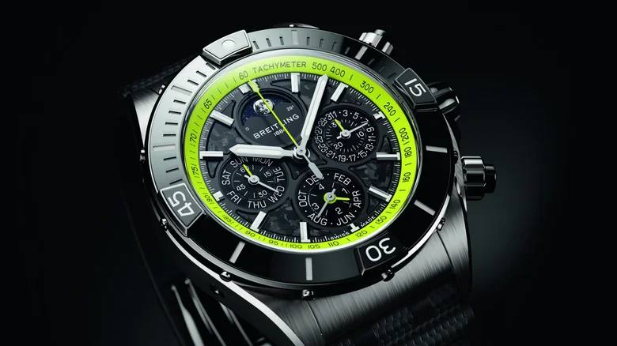

Тачки и Точка
@tachki
Тачки и Точка
@tachki
Breitling выпустила часы которые нельзя купить без Aston Martin за миллион долларов их предложат только владельцам гиперкара Valhalla.

Breitling выпустила часы, которые нельзя купить без Aston Martin за миллион долларов — их предложат только владельцам гиперкара Valhalla.
Покупателям доступны две модели Super Chronomat с карбоновыми циферблатами: 44-миллиметровый хронограф с вечным календарём и 38-миллиметровая версия с бриллиантами. Цвета стрелок и отдельные детали можно подобрать под собственный автомобиль.
Всего Aston Martin выпустит 999 экземпляров Valhalla, поэтому часы достанутся лишь избранным. Цены на аксессуар пока не раскрывают, зато сам гиперкар стоит от $1 миллиона (₽83,8 миллиона).
🚙 Тачки и Точка
Покупателям доступны две модели Super Chronomat с карбоновыми циферблатами: 44-миллиметровый хронограф с вечным календарём и 38-миллиметровая версия с бриллиантами. Цвета стрелок и отдельные детали можно подобрать под собственный автомобиль.
Всего Aston Martin выпустит 999 экземпляров Valhalla, поэтому часы достанутся лишь избранным. Цены на аксессуар пока не раскрывают, зато сам гиперкар стоит от $1 миллиона (₽83,8 миллиона).
🚙 Тачки и Точка